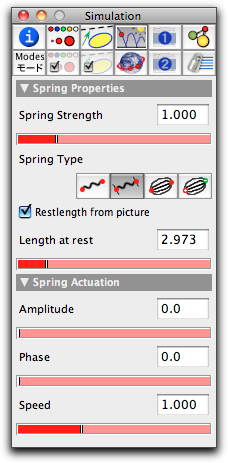
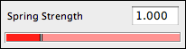
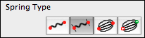
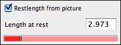
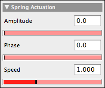

Spring

| force = springconstant · |length – restlength| |
Here |x| denotes the absolute value of x, springconstant is a characteristic constant of the spring that can be adjusted in the inspector, restlength is the resting length of the spring, and length is the distance between the two points. Springs are very powerful objects that admit many variations via the inspector. So we will first have a look at the inspector before we discuss the various possibilities for defining a spring.
Inspecting Springs
The spring inspector comes with a great variety of possibilities for modification. We will discuss these modifications one by one.
 |
| The spring inspector |
Spring Strength
The spring strength slider helps in adjusting the value of springconstant. No matter what kind of interaction is modeled by the spring, the springconstant acts as a factor by which the final force is multiplied. Thus setting this slider to a value of zero is equivalent to removing the spring from the configuration.
 |
Spring Type
In CindyLab all interactions between pairs of points are internally modeled as springs. Thus it is simple to switch between the different types of interaction. This can be done by choosing the springtype in the inspector. Currently, there are four different types of interaction implemented. Each of them comes with a specific behavior (and formula) for the spring.
 |
The four types are defined as follows:

| force = springconstant ∗ length. |
This type is the default spring type when a Rubber Band is added.

| force = springconstant ∗ (length – restlength) |
This type is the default type when a spring is added.

| force = springconstant ∗ mass1 ∗ mass2 / dist² |

| force = springconstant * charge1 * charge2 / dist² |
This type is the default spring type when a Coulomb Force is added.
Restlength
The two items Restlength from picture and Length at rest are relevant only if the spring has a resting length.
 |
If Restlength from picture is checked, then the resting length of the spring is defined to be the length of the spring in the drawing when the simulation is started. Thus in this case, a single spring with two mass-objects not otherwise connected at the endpoints exerts no force on the masses.
If this box is not checked, the spring's resting length will be defined by the Length at rest value in the inspector.
Spring Actuation
The two items Amplitude and Phase will be relevant only if the spring has a resting length. In this case, CindyLab provides the possibility to vary the resting length periodically in time. The resting length is then modulated by a sine function, causing it to become periodically longer and shorter.
 |
The amplitude of the resting length variation can be adjusted by the Amplitude slider. The phase of the vibration with respect to the other springs can be adjusted by the Phase slider. The speed of the oscillation is globally adjusted in the environment inspector.
Examples
Due to their programmatic flexibility, springs can be used in many different circumstances. Here we will present just a few examples and pictures that exemplify the use of springs.
A Bridge
The first example shows a network of springs that simulates the behavior of a bridge. All springs in this example are used with the default physical setup. However, the appearance of the springs has been slightly altered. Usually, springs are rendered as wiggly objects. This feature can be turned off by the render button in the inspector. Furthermore, CindyScript code was added to change the color of the springs according to their interior tension. |
| A bridge constructed with springs |
Double Pendulum
The next example shows the chaotic movement of a double pendulum. Here two springs are connected and one endpoint is fixed to the ground plane. The springconstant is set to a relatively high value so that the springs behave nearly like rigid rods. The picture shows the movement of this double pendulum under the influence of gravity. |
| The chaotic motion of a double pendulum |
Two-Body Movement
The next pictures show two mass particles with initial velocities and their behavior under gravitational forces. For this example, the type of the spring was set to Newton's law. The two mass particles simulate a system of two stars that orbit each other. |  |
|
| Two instances of two-body motion |
Springs and CindyScript
Like any CindyLab object, a spring provides several fields that can be read and very often set by CindyScript. The following list shows the accessible fields for springs:
| Name | Writeable | Type | Purpose |
l | no | real | current length of the spring |
lrest | yes | real | resting length of the spring |
ldiff | no | real | current length difference to the resting length |
potential | no | real | the potential energy of the spring |
pe | no | real | the potential energy of the spring |
strength | yes | real | the spring constant |
amplitude | yes | real | the amplitude of actuation |
phase | yes | real | the phase of actuation |
simulate | yes | bool | turn on/off simulation for this spring |
Page last modified on Friday 26 of August, 2011 [15:27:56 UTC].
The original document is available at
http://doc.cinderella.de/tiki-index.php?page=Spring